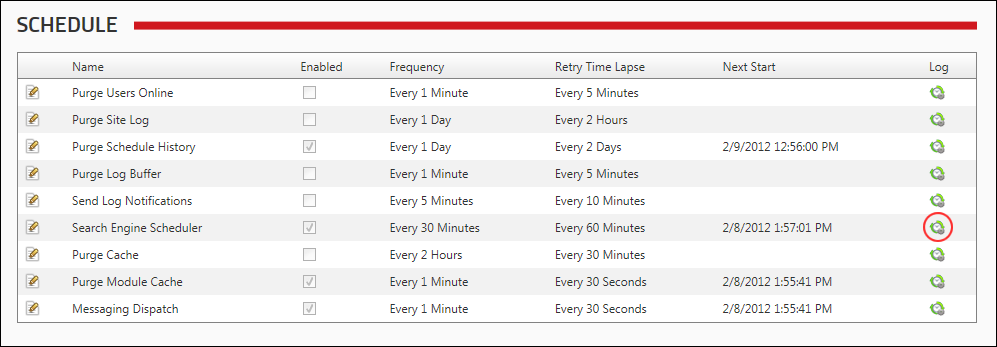
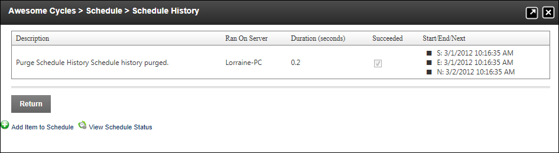

Viewing Schedule History For A Task
How to view the history for any task within the Schedule module.
- Navigate to Host > Advanced Settings >
 Schedule.
Schedule.
- Locate the required task.
- In the Log column, click the View History button.

You are now located on the Schedule History page where the following details are displayed for each task:
- Description: Description of the task including any notes on the task. E.g. Completed re-indexing content.
- Ran On Server: The name of the server where the task was run.
- Duration (seconds): The number of seconds taken to complete the task.
- Succeeded: A True or False statement tells if the scheduled task was successfully completed.
- Start: Date and time the task began. E.g. S: 2/8/2012 4:00:00 PM
- End: Date and time the task ended. E.g. E: 2/8/2012 4:05:006 PM
- Next: Date and time that the task is next scheduled. E.g. N: 2/9/2012 4:00:00 PM

The Schedule History page for a scheduled task